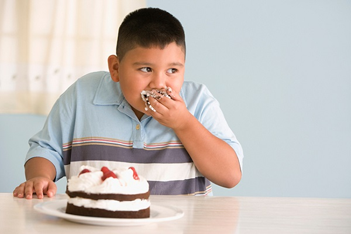
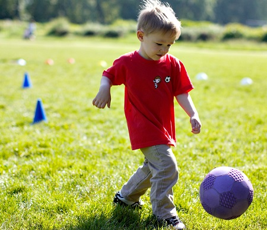
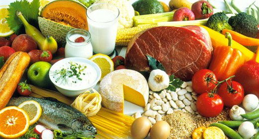
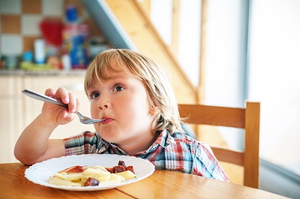
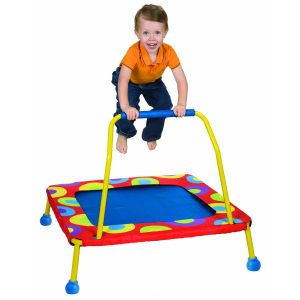

Если у вашего ребенка лишний вес (в действительности мы имеем в виду лишний жир) или он тучный, тогда мы поможем вам составить индивидуальную программу. Мы называем ее программа L.E.A.N. (худощавость), так как она основывается на четырех главных изменениях, необходимых для того, чтобы оставаться стройным: стиль жизни (L. — lifestyle), упражнения (E. — exercise), отношение (A. — attitude) и питание (N. — nutrition).
Одно из самых важных «здоровых» слов, которое вы можете выучить, — это «худощавость». Под «худощавым» мы отнюдь не имеем в виду худой или тощий, что зачастую не является здоровым. Мы просто подразумеваем правильное количество жира в организме для вашего типа телосложения. Худощавость ассоциируется с пониженным риском практически всех заболеваний, которые вы не хотите обнаружить у своего ребенка, например, диабет, сердечно-сосудистые заболевания и рак. Ожирение — это проблема со здоровьем от головы до пальцев ног: снижение способностей к обучению, нарушения настроения, проблемы с зубами, нарушения зрения, астма, сердечно-сосудистые заболевания, повышенное артериальное давление, дерматит, артрит и практически все другие «-иты», которые могут прийти вам в голову.
Одно из самых последних открытий — установление того, что лишний жир, особенно вокруг талии, который мы назвали «токсичная талия», является метаболически другим типом жира. Излишний жир, скапливающийся вокруг талии, становится подобным ядовитому химическому заводу, собирающему внутренние загрязнители, которые в прямом смысле слова засоряют растущую сердечно-сосудистую систему ребенка, и распространяющему воспалительные химические вещества, что вызывает износ и повреждение практически всех органов, мешая росту. Излишний жир на талии накапливает химикаты, которые не дают вашему ребенку правильно перерабатывать сахар, что не только мешает нормальному росту, но и вызывает множество «-итов» и увеличивает риск диабета.
Что касается диабета, родители, это настоящая проблема! Министр здравоохранения оценивает детское ожирение как номер один среди проблем здоровья общества.
СОВЕТ ДОКТОРОВ СИРС: ОБЛЕГЧЕННАЯ L.E.A.N. ПРОГРАММА Некоторые дети лишь слегка полноваты, и им нужно сделать всего несколько незначительных изменений, например, потреблять в день на 50 калорий меньше и/или сжигать на 50 калорий больше. Этого можно достичь, отказавшись от эквивалента половины пирожного в день и/или бегая 10 минут в день. Вот так просто! Потеря 50 калорий в день превращается в потерю 250 граммов жира в месяц, или 3 кг в год. Взрослые тоже могут поддерживать худощавую форму, следуя этой простой облегченной L.E.A.N. программе. |
Мы считаем детское ожирение самой серьезной медицинской проблемой, с которой мы сталкивались за почти четыре десятилетия нашей педиатрической практики. Хорошая новость — эту проблему также легче всего предотвратить. Ниже мы описываем пошаговую программу поддержания веса, которую мы используем в нашей практике. Она работает у людей всех возрастов, поскольку, чтобы ребенок оставался худощавым, вся семья должна быть худощавой. То, скольким пунктам программы вам нужно следовать и насколько добросовестно вы должны их придерживаться, зависит от степени полноты вашего ребенка. Вот наша пошаговая программа, как держать ребенка в стройной форме:
1. ПРОЙДИТЕ МЕДИЦИНСКОЕ ОБСЛЕДОВАНИЕ
Запишите своего ребенка на осмотр к врачу. Попросите «длительный визит на тему контроля веса». Возьмите с собой записную книжку, чтобы вести свой собственный дневник и записывать результаты измерений, которые проводит ваш врач. Во время медицинского обследования ваш врач проведет следующие измерения и может назначить некоторые из нижеперечисленных лабораторных анализов. Фиксируйте результаты до того, как ваш ребенок начнет программу L.E.A.N., и через 3 и 6 месяцев следования этой программе.
ИЗМЕРЕНИЯ ДО И ПОСЛЕ ПРОГРАММЫ
Измерения перед программой L.E.A.N. |
Измерения через 3—6 месяцев следования программе L.E.A.N. |
Рост: |
Рост: |
Вес: |
Вес: |
Индекс массы тела: |
Индекс массы тела: |
Талия: |
Талия: |
Сахар в крови: |
Сахар в крови: |
Липидный профиль: |
Липидный профиль: |
Уровень инсулина: |
Уровень инсулина: |
Другие анализы: |
Другие анализы: |
2. ПОСТАВЬТЕ ЦЕЛЬ
Мы не говорим «программа по контролю веса», «программа по потере жира» или любыми другими терминами, имеющими отношение к ожирению. Дети не только осознают то, как выглядит тело, но они также ориентированы на действия. Первый вопрос, который мы задаем ребенку, звучит примерно так: «Что бы ты больше всего хотел делать: быстрее бегать, играть в футбольной команде или лучше играть в волейбол?» Затем мы подстраиваем программу под ребенка: «Футбольная программа Сьюзи». Попросите ребенка перечислить свои цели, например, так: «Моя цель — быстрее бегать» и «Чтобы у меня было больше энергии». Попросите ребенка перечислить свои цели в дневнике.

СОВЕТ ДОКТОРОВ СИРС: ЦЕЛЬ – НЕ ПРИБАВЛЯТЬ Две простые цели, которых может достигнуть практически каждый ребенок:
Мы обнаружили, что это самые простые и самые достижимые цели, которые можно поставить. Увеличивается рост ребенка, но не его вес или обхват талии, и в результате ребенок приобретает свой идеальный вес. Мы называем этот процесс вытягиванием: в сущности, это то, что многие дети делают, переходя из детства в стройный подростковый период. |
3. ПИСЬМЕННО ИЗЛОЖИТЕ ОБЯЗАТЕЛЬСТВА
Постарайтесь, чтобы ребенок написал заявление об обязательствах, например, такое:
Я обязуюсь следовать детской программе L.E.A.N. по меньшей мере в течение 12 недель:
Подпись: ____________ Дата: ____________
Какие виды физической активности тебе больше всего нравятся?
________________________________________________________________
Как много времени ты уделяешь физической активности каждый день?
________________________________________________________________
Я обязуюсь выполнять следующие виды физической активности 5 раз в неделю:
________________________________________________________________
________________________________________________________________
________________________________________________________________
________________________________________________________________
________________________________________________________________
4. ВЕДИТЕ ДНЕВНИК ХУДОЩАВОСТИ
Пусть ребенок ведет дневник «вместо», куда он будет записывать хотя бы один более полезный для здоровья выбор, который он сделал в этот день, как указано ниже в примерах (безусловно лучше, если таких «вместо» будет несколько):
L. (стиль жизни): Вместо того чтобы посетить наш обычный ресторан быстрого питания, мы обедали в том, где был большой выбор салатов из настоящих овощей.
E. (упражнения): Вместо того чтобы играть в видеоигры, я провел 20 минут на свежем воздухе.
A. (отношение): Вместо того чтобы беспокоиться о..., я думал о хорошем.
N. (Питание): Вместо того чтобы пить колу, я пил воду.
Диета «настоящая еда» — самая действенная диета, которой легче всего придерживаться и которая подходит всей семье. Начните придерживаться диеты «настоящая еда» в как можно более раннем возрасте, и это поможет сформировать молодой вкус (еще три волшебных слова контроля веса), научив ценить настоящую полноценную еду. У большинства сегодняшних детей настолько сформировался вкус к искусственным жирам, подсластителям, красителям и ароматизаторам фасованной еды, что многие остерегаются настоящей еды.

СОВЕТ ДОКТОРОВ СИРС: ЕШЬТЕ НАСТОЯЩУЮ ПИЩУ В этих трех словах — суть контроля веса. Мы считаем, что помимо сидячего образа жизни главной причиной эпидемии детской полноты является то, что сегодняшние дета утратили вкус к настоящей полноценной еде. В большинстве случаев, если родители сделают такое изменение в семейном рационе, вся семья будет стройней: ешьте только настоящую пищу, а не фасованную еду. Это просто означает пищу, которая растет, бегает или плавает. |
На своем опыте мы убеждаемся, что у мам, которые с младенчества и до 3 лет кормят своих детей только едой домашнего приготовления, вырастают дети, остерегающиеся нездоровой пищи и более здоровые, счастливые и стройные. Дети, которые росли на пакетированной еде и остерегаются настоящей пищи, более болезненные, скучные и толстые.
5. ПИТАЙТЕСЬ ПО СХЕМЕ «СВЕТОФОР»
ПИТАНИЕ ПО СХЕМЕ «СВЕТОФОР»
Продукты зеленого света |
Продукты желтого света |
Продукты красного света |
Они полезны для вас, наслаждайтесь! Ешьте эти выращиваемые продукты в любое время! |
Приостановитесь, не слишком много! Ничего страшного, если есть их иногда в качестве редкого лакомства. |
Остановитесь и задумайтесь о более здоровом выборе! Не ешьте эти продукты. Они не помогают расти. |
|
|
|
То, насколько строго вам надо придерживаться этой таблицы, зависит от степени полноты вашего ребенка. Если он действительно страдает ожирением (весит на 20% больше своего оптимального веса) и у него есть складки жира на животе, за которые вы можете ухватиться, этот ребенок действительно не должен никогда есть продукты «красного света». И только изредка ему можно употреблять продукты «желтого света», пока он не достигнет своей весовой цели.
6. ИЗБЕГАЙТЕ ТРЕХ «ПЛОХИХ СЛОВ» НА ПРОДУКТОВЫХ ЭТИКЕТКАХ
Во время планового осмотра перед школой ребенка 4—5 лет мы говорим родителям, чтобы они учили ребенка обращать внимание на эти три «плохих слова» на продуктовых этикетках:
Это очень простой способ для детей отличать вредную пищу от настоящей еды.
7. КОРМИТЕ СВОЮ СЕМЬЮ ЗАПОЛНЯЮЩЕЙ ЕДОЙ
Введите в рацион пищу с высоким содержанием белков и клетчатки, которая занимает много места в желудке и помогает детям быстрее почувствовать насыщение, благодаря чему сокращается вероятность того, что они переедят. Приемы пищи никогда не должны состоять только из углеводных продуктов, а всегда включать одного или двух «друзей» — клетчатку и белок. Вот как мы объясняем понятия «хорошие углеводы» и «плохие углеводы» молодым родителям: «У хорошего углевода есть два друга, клетчатка и белок. Он никогда не играет один. Два друга замедляют процесс проникновения углеводов в кровоток. У плохого углевода, наоборот, нет друзей. Он играет один. В отличие от хорошего углевода, у которого есть два друга, замедляющих натиск сахара, плохой углевод устремляется в кровоток, и в результате этого всплеска сахара вы будете усталым, беспокойным и даже толстым». Вкусными заполняющими продуктами являются: овощи, фрукты, йогурт и ореховые масла. Вы можете представить эти продукты более позитивно, называя их «продукты для роста», что дети ассоциируют с возможностью быстро бегать и расти сильными. Концепция употребления большего количества «продуктов для роста» помогает детям верить, что здоровая пища — это здорово. Поскольку настоящая еда, «еда для роста» или еда «зеленого света» (называйте ее, как вам больше нравится) является более заполняющей, дети редко переедают, употребляя ее.
СОВЕТ ДОКТОРОВ СИРС: СНАЧАЛА САЛАТЫ Начиная прием пищи с салата (выбирайте листья темного цвета, а не прозрачный или кочанный салат), вы помогаете невольному обжоре насытиться здоровыми калориями, в результате чего он потом меньше съест менее здоровой пищи. |
8. УМЕНЬШИТЕ РАЗМЕР ПОРЦИЙ СВОЕГО РЕБЕНКА
Неподходящие порции — это настоящая проблема для детей, поскольку маленькие глаза больше, чем маленькие желудки. Запомните, что желудок вашего ребенка размером с его кулак. Давайте ребенку тарелки меньшего размера, чтобы более маленькие порции выглядели больше. Позвольте ребенку самому накладывать себе еду. Исследования показывают, что дети, которые сами себе накладывают еду, как правило, берут меньше пищи, чем им дают родители.
9. СЛЕДУЙТЕ ПРАВИЛУ «ДВОЕК» ДОКТОРА СИРСА
Научите своего ребенка:
В организме и мозге есть система, которая подсказывает ребенку, когда перестать есть. Когда животик полный, он посылает мозгу сигнал, говоря: «Хватит, ты съел достаточно!» Но мозг может получить этот сигнал примерно на 20 минут позже. Ребенок, который ест слишком быстро, может переесть прежде, чем мозг скажет: «Хватит!». Советуйте ребенку откусывать маленькие кусочки и разговаривать в промежутке между кусочками. Играйте в «жуй-жуй». Скажите, что надо жевать каждый кусочек по меньшей мере 10 раз. Растите жевуна. Исследования показали, что люди, которые едят одинаковое количество пищи и одинаковое количество калорий, но маленькими приемами в течение дня, как правило, более стройные, чем обычные трехразовые едоки. Как вы узнали ранее, поддержание гормональной гармонии ребенка стабилизирует уровень инсулина, что не позволяет накапливаться излишнему жиру. Медленное жевание в течение дня помогает поддерживать этот баланс.
10. НЕ ПОЗВОЛЯЙТЕ БЕЗДУМНО ЖЕВАТЬ
Не позволяйте ребенку есть во время просмотра телевизора. Когда он не думает о животике, он, скорее всего, переест. Если он действительно хочет перекусить, сидя перед телевизором, устройте овощной перекус, поданный в маленьких емкостях, так чтобы ему пришлось, по крайней мере, подняться и пойти на кухню, чтобы взять добавку.

11. ДЕЛАЙТЕ РАЗУМНЫЕ ПОКУПКИ
Супермаркет может быть гигантской классной комнатой правильного питания. Когда вы входите в супермаркет, говорите ребенку: «Мы совершаем покупки только в этом ряду».
«Почему, мамочка?» — может спросить ваш ребенок.
«Потому что именно здесь находятся продукты для роста. Иди и выбери один желтый овощ, два зеленых и три красных...»
Затем идите к прилавку с хлебом (наш самый любимый урок по питанию). Предложите ребенку взять буханку белого хлеба в одну руку и буханку 100-процентного цельнозернового хлеба — в другую. Попросите его определить разницу. Скорее всего, вы получите такой ответ: «Белый хлеб легче и мягкий.
ЛУЧШЕЕ ДЛЯ ЗДОРОВОГО ПЕРЕКУСА Вот некоторые идеи перекуса, который снабдит организм необходимыми протеинами и здоровыми жирами:
|
Цельнозерновой хлеб тяжелее и плотнее на ощупь». Дополните наблюдения своего ребенка, сказав: «Это из-за того, что белый хлеб подобен воздушному хлебу. В нем нет продуктов для роста. Цельнозерновой хлеб тяжелее и не такой мягкий, потому что в нем много продуктов для роста. Ты хочешь, чтобы твои мышцы были слабые и мягкие, как белый хлеб, или сильные и крепкие, как цельнозерновой хлеб». Вы даже можете отправиться к прилавкам с йогуртами (Господи, что же пищевая индустрия сделала с такой здоровой пищей, как йогурты!). Сыграйте в игру «Я шпионю своими маленькими глазками» с этикеткой на йогурте. Позвольте ребенку выбрать натуральный йогурт, который не содержит плохих слов, таких как «кукурузный сироп с высоким содержанием фруктозы» и множество красителей.
12. ДАЙТЕ ДЕТЯМ ВОЗМОЖНОСТЬ ДВИГАТЬСЯ
В любом возрасте диета без движения не работает. Тот, кто все время сидит, накапливает больше калорий, чем сжигает, а это ведет к ожирению. Мы учим родителей: «Заведите домашнее правило: движение равно сидению. Каждый день требуйте, чтобы ребенок проводил по меньшей мере такое же количество времени за физическими играми, как и за сидением перед телевизором». Наденьте на ребенка шагомер. Это маленькое мотивирующее приспособление представляет собой измеритель размером со спичечный коробок, который крепится к поясу или юбке и записывает, как много шагов пройдено за день. Сделайте мотивационную таблицу, показывающую количество шагов, которые ребенок сделал за день, и приклейте ее на холодильник. Постарайтесь, чтобы это количество было больше, чем в предыдущий день. Например, в первый день это может быть 5000 шагов, но к концу недели ребенок может совершить до 10 000 шагов. Детям нравится наглядно видеть свой прогресс. Поощрите ребенка заниматься спортом во время просмотра телевизора. Например, он может прыгать на мини-батуте, растягивать эластичные ленты или заниматься на велотренажере во время просмотра телевизора или играть в видеоигры ногами.

ВОСПИТАНИЕ ХУДОЩАВОГО РЕБЕНКА
Вот два самых важных шага, которые вы можете предпринять, чтобы с рождения прививать своему ребенку здоровые привычки питания.
1. Кормите грудью. Кормите грудью так часто и так долго, как можете. Американская академия педиатрии рекомендует матерям кормить грудью по меньшей мере 1 год; Всемирная организация здравоохранения — по меньшей мере 2 года. Да, мы действительно сказали года! Недавние исследования показали, что дети, которых кормят грудью, как правило, растут более худощавыми. Вот несколько причин, почему грудное вскармливание — хорошая профилактика избыточного веса:
• при грудном вскармливании ребенок в большей степени контролирует свое кормление — как много и как часто он ест. Кормящей матери нужно просто следить за знаками, которые ее ребенок подает во время кормления, поскольку вы не можете считать граммы или заставлять ребенка «выпить бутылочку до дна». С другой стороны, мать ребенка, кормящегося из бутылочки, может поддаться соблазну побуждать ребенка «допить бутылочку до дна».
• Дети, вскармливающиеся грудью, — естественные пастбищные животные. Они едят чаще, чем их друзья, кормящиеся из бутылочки, но грудное молоко усваивается в два раза быстрее, чем детские смеси. Они привыкают к другому «ощущению в животике», возможно, из-за того, что они удовлетворяются менее полным животиком, и это становится для них нормой.
2. Кормите ребенка настоящей едой. Готовьте свое собственное детское питание так часто и долго, как это возможно. Как мы упомянули выше, это сформирует взгляд вашего ребенка на то, какой вкус должна иметь настоящая еда.
Здоровье ребенка от докторов Сирс / Сирс У. и др.